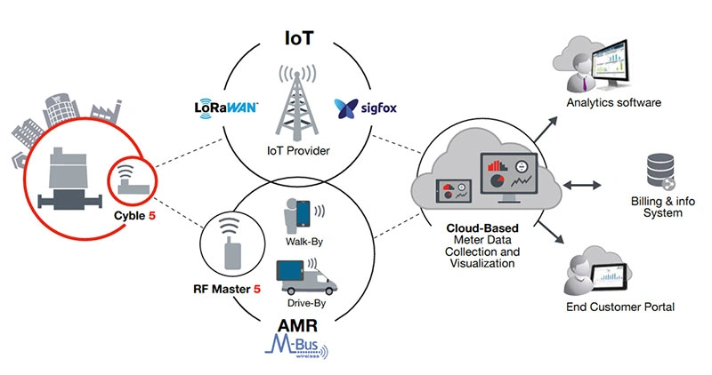

From the archive · Originally published in 2023. References to industry conditions, regulations and software reflect the original publication date.
In 2023, Victoria is facing a severe rental crisis, so much so that the then Victoria Premier, Daniel Andrews, released the Victorian government's housing statement, acknowledging and tackling some of these root causes. They call it 'Good decisions, made faster'; the government will take over the review of planning applications for developments valued at $50 million or more in Melbourne and $15 million or more in regional Victoria from local councils as long as there is a minimum of 10% affordable housing. It translates to around 13,200 new homes that would have otherwise never seen the light of day. It will reduce the application processing durations from over twelve months to just four. The Victorian government also specifically stated that this would include new build-to-rent projects. [1]
The above sets the backdrop for our exploration into Australia's evolving Built-to-rent (BTR) landscape. The BTR model emerges as a potential solution to address some of Victorians' housing challenges. By delving into the construction and design considerations inherent to BTR projects, this blog post aims to introduce what makes a BTR building different so that builders, contractors and developers can confidently tender and tackle these trending jobs. We will delve into the construction and design considerations that differentiate it from the conventional Built-to-sell (BTS) model.
What is a Built-to-rent (BTR) apartment?
A Built-to-rent (BTR) apartment is a residential development where a single entity owns all units, usually the project's developer, and is leased rather than sold. These developments provide a range of amenities; the best way to describe them is to imagine living long-term at a hotel. They have a professional management team in place to ensure proper building management. The BTR model is gaining traction as it offers a better housing solution at scale, aligning with the changing preferences of modern renters who value flexibility, convenience, and community living.
The best way to describe BTR:"Imagine living long-term at a hotel"
Designing for Longevity
The long-term nature of BTR apartments requires an engineering approach that emphasises durability, efficiency, and ease of maintenance. Unlike BTS projects, where aesthetic appeal and a lower build cost are keys, BTR construction must produce a building that ensures a low cost of ownership over time.
The project developer will have to maintain the building forever until they decide to sell the entire building down the track, which means it is less likely that the developer will order the builder to cut corners during the build process. Sometimes, it is not uncommon for the developer to draw on their past building maintenance experience and include specific design requests in the building services specifications or the principal project requirements (PPR). Tier 1 developers may have an in-house design team well-versed in building services or at least a close external consulting partner. It is essential for all parties involved, including the building services contractors, to recognise this crucial difference during the tender process; the developer may very well knock back the typical design-and-construct (D&C) rationalisation.
Building a Sustainable Tower
Sustainability is a defining feature of BTR developments. Incorporating energy-efficient systems, water-saving fixtures, and sustainable materials is not merely a nod to environmental responsibility but a pragmatic approach to reducing operational costs. Some examples of how the building design can incorporate this:
Variable Refrigerant Flow (VRF):
Dividing a building into zones, each with set points based on usage, occupancy, and user preferences, allows for tailored temperature control while optimising energy use. Unlike traditional systems that burn fossil fuels, the all-electric VRF system circulates refrigerant between outdoor and indoor units; depending on the brand and model, as many as 50 indoor units can be connected to just one outdoor unit to provide heating and cooling. VRF technology offers a more sustainable heating and cooling solution by capturing and repurposing existing heat from the environment, thereby reducing carbon emissions. In heating mode, the outdoor unit expands the refrigerant gas, extracts thermal energy from the ambient air or water, and transfers it to indoor units. During cooling, indoor units absorb and transfer heat from interior zones to outdoor units for rejection. This technology eliminates the need for separate air conditioners and heating systems, making it a cost-effective solution. [2]
Optimise Plant Sizing:
Plant and equipment selection is vital in keeping the ongoing operation cost low. If the plants are oversized, the electricity and, or gas costs can easily be overblown. The same goes for the maintenance cost of the large plant. An example is the water booster pump set; the Australian Standard AS3500.1's method of calculating water consumption was conceived many years ago, so the data is dated compared to today's actual usage statistics. Mindlessly following AS3500.1's Deemed-to-satisfy method will result in a grossly oversized pump set, increasing the ongoing cost for the building's owner.
Smart Metering:
Implementing an intelligent Building Management System (BMS) that integrates with various installed meters will help the building manager monitor and optimise multiple operations based on real-time data, leading to substantial energy savings. For example, plumbing contractors can install BMS-compatible water meters to enable future building managers to monitor water consumption in different areas and identify and promptly address any inefficiencies or leaks. Standard water meters can be integrated into a BMS network by attaching an attachment like the Itron Cyble M-bus or Cyble 5 modules.

Energy Recovery Ventilation (ERV):
Like us, buildings must also breathe fresh air, "markup air" in Mech term, and exhaust stale air. Depending on the type of building, it may need more fresh air, and this is where the cost-benefit of installing an ERV system shines. For example, typical hospital rooms require a baseline of 6 Air Changes per Hour (ACH). [3] If ventilation is not designed well, it could introduce unwanted heat or chill into the internal space and make the air conditioners work harder to regulate. ERV systems capture and reuse energy from exhaust air to pre-condition incoming air, reducing the energy required to heat or cool the fresh air.
Fault Detection:
We live in an interconnected era where we can automate almost anything to a certain degree; in construction, this is the Building Management System (BMS), which serves as a central hub of all critical building systems. A vital feature of an intelligent BMS is its automated fault detection, remote monitoring and control across HVAC, electrical systems or Hydraulic plants. Some examples include:
- Hot water plant: The newer Rheem Tankpak Series 3 have 36 distinct fault points, including a blocked filter warning.
- Stormwater/sewer pumps usually have a common fault output, but the plumbing contractor can add pump-well level sensors if more precise management is required.
- Emergency lighting, which must be tested regularly as per AS2293.2, can be integrated into the BMS to automate a large chunk of the test and save on labour costs.
Wrapping Up: The BTR Blueprint
The expedition into the BTR domain is more than a commercial venture; it's an effort towards redefining urban living. The major players are already in it; Tim Gurner, who founded Gurner Group, raised $1.2 billion to attack BTR projects as early as 2021. [5]
By offering a stable rental model, BTR apartments provide an attractive living solution for renters that contributes to social cohesion at the same time. The emphasis on high-quality and sustainable construction will lift the industry standards in Australia. The government's supportive stance and proactive engagement of developers and investors herald a promising era for the Australian housing landscape. It is also the hope of many that it could form part of the solutions to ease the ongoing rental crisis in Victoria.
References
- [1] Government of Victoria. "Victoria's Big Housing Build". Retrieved on October 9, 2023, from https://www.vic.gov.au/housing-statement
- [2] Mitsubishi Electric Trane HVAC US. "Variable Refrigerant Flow (VRF) Systems and Technology". Retrieved on October 11, 2023, from https://www.mitsubishicomfort.com/articles/what-is-all-electric-vrf-technology
- [3] Department of Health, Victoria, Australia. "Ventilation | COVID-19 Infection Prevention and Control Guidelines." Retrieved on October 14, 2023, from https://www.health.vic.gov.au/covid-19-infection-prevention-control-guidelines/ventilation
- [4] Stream Measurement. "Itron Automatic Meter Reading Diagram." Retrieved on October 14, 2023, from https://stream-measurement.com/jwfmedia/products/flow/natural-gas-flow-meters/itron-cyble/itron-automatic-meter-reading-diagram.jpg
- [5] The Urban Developer. "Gurner, Qualitas Raise $1.2bn Build-to-Rent War Chest". Retrieved on October 11, 2023, from https://www.theurbandeveloper.com/articles/gurner-qualitas-raise-12bn-build-to-rent-war-chest
- [6] Scott Carver. "Gladstone St, South Melbourne, VIC." Retrieved on October 15, 2023, from https://www.scottcarver.com.au/our-projects/gladstone-st-south-melbourne-vic